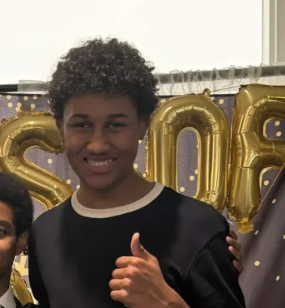

Tayo Sennowo - Co-founder, Software Lead
Tayo is a rising senior at East Ridge High School. He is proficient in the programming languages Java, JavaScript/HTML/CSS, Python, and C#. Besides computers, he is involved in swimming, National Honor Society, Student Cabinet, and soccer (to name a few), all while possibly being the biggest Pokémon fanatic in history.